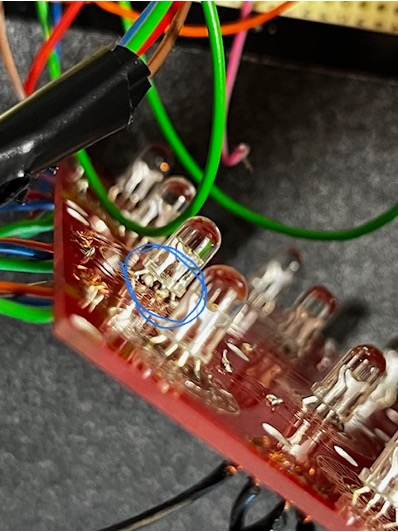
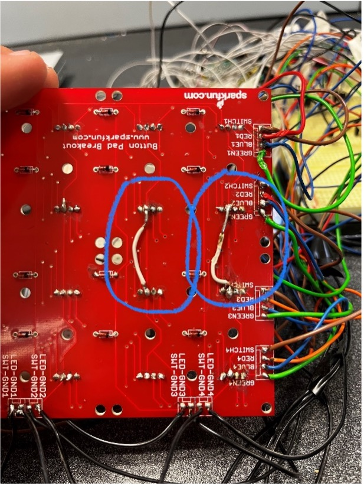
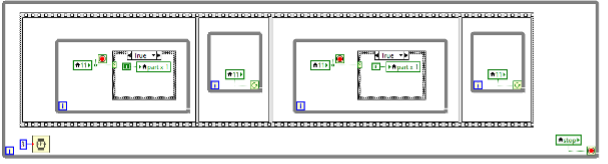
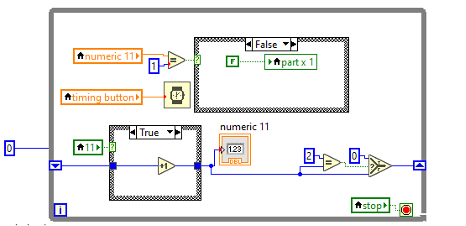

Een GIP zoals deze kan natuurlijk onmogelijk foutloos verlopen. Daarom heb ik voor u een lijstje gemaakt met onderdelen waar het even mis liep.
In het begin, toen ik mijn GIP aan het simuleren was in LabVIEW, liep mijn hele computer vast zodra ik het programma slechts 2 seconden liet draaien.
Eerst dacht ik dat het programma te zwaar was voor de school-laptop, of dat mijn geheugen te klein was. Later ontdekte ik dat ik te veel while-loops gebruikte in mijn programma. Het probleem werd opgelost door kleine pauzes of vertragingen toe te voegen en het aantal while-loops te verminderen. Hierdoor kon ik de simulatie zonder fouten uitvoeren.
Ik heb gekozen in mijn GIP om met langere muzieksamples te werken, dit wil zeggen dat ik dus een soort systeem zou moeten bedenken in LabVIEW om de samples op een juiste manier samen te laten spelen en makkelijk ertussen te switchen. Eerst dacht ik te werken met een For-loop. Die berekent de beats per minute van de sample, de aantal tellen dat afgaat en dan de muzieksample zou afspelen.
Dit had als nadeel dat de gebruiker zelf nog te veel zou moeten rekening houden met het ritme van de muziek die hij of zij zou spelen.
Mijn volgende idee was om met een metronoom te werken in LabVIEW. Deze metronoom zou ik zelf kunnen instellen op het aantal beats per minute en daarop kunnen de muzieksamples getimed worden. Hierbij was het probleem dat ik de metronoom te ingewikkeld had gemaakt waardoor de timers in LabVIEW niet meer overeenkwamen en dan speelde alles gewoon door elkaar. Als oplossing heb ik uiteindelijk een simpelere metronoom gemaakt. Hierdoor zullen al de geluiden op hetzelfde ritme spelen. Dit maakt het ook veel makkelijker voor de gebruiker van de launchpad.
Door het testen van de LED-matrix was er telkens 1 rij die niet correct functioneerde. Er zouden volgens het programma blauwe LED’s moeten branden maar er verschenen paarse of groene LED’s in de plaats. Ik dacht dat het een fout was in het programma maar dat was het niet.
Ik heb alles nagemeten met een multimeter en kwam er op uit dat er contact werd gemaakt tussen de blauwe rij en de groene rij in kolom 3. Door alles goed na te meten en te zoeken dacht ik eerst dat er een LED stuk was. Ook dit was niet het geval.
Na aandachtig te kijken, zag ik dat aan de bovenkant net onder de LED die ik had gesoldeerd, iets te veel tin door het gaatje was gekomen en zo contact maakte tussen de rijen. Ik heb deze LED verwijderd, de tin proper gemaakt en de LED opnieuw gesoldeerd op zijn plaats.
Toen ik met mijn led sturing bezig was, merkte ik dat niet alle LED’s werkten of niet aangingen wanneer ik het wilde. Ik ben dan LED per LED gaan testen en daar lag de fout niet. Ik heb gemeten met de multimeter en kwam tot de conclusie dat de cathode’s van de LED’s niet allemaal doorverbonden waren in de printplaat. Dit kwam hoogstwaarschijnlijk omdat ik te lang op enkele stukken gesoldeerd heb en de 2 printbaantjes beschadigd werden door de hitte van de soldeerbout. Ik heb dit opgelost door zelf 2 kabeltjes te verbinden tussen de kathodes zoals u kunt zien op onderstaande foto.
Doordat ik met lange geluidsamples werk, wil ik mijn drukknoppen als schakelaars kunnen gebruiken die ik aan en uit kan zetten. Hiervoor had ik een stukje code gemaakt in LabVIEW dat zeer veel vroeg van het programma. Dit kwam doordat ik 5 while-loops gebruikte per drukknop, 5 maal 16 zijn 90 while-loops enkel en alleen voor mijn drukknoppen. Dit was te zwaar voor LabVIEW waardoor het programma zware vertragingen toonde en dus ook mijn hardware niet volledig werkte in combinatie met mijn programma. Ik heb moeten sleutelen aan mijn programma.
Ik ben gaan werken met shift-registers:
Door deze aanpassing in mijn programma ben ik van 90 naar 16 while loops kunnen gaan en kon LabVIEW weer volgen. In dit stukje code met de shift-register tel ik wanneer er wordt geduwd op de knop. Door de variabele “timing button” kan ik kiezen om de hoeveel tijd de meting moet gebeuren. Ik heb ondervonden dat 150 milliseconden de beste tijd is. Wanneer er wordt gemeten dat er voor de 1e keer wordt gedrukt op de knop zal de muzieksample aangaan. Als er voor een 2e keer wordt gedrukt zal de muzieksample zijn stuk afmaken en daarna stoppen. Ook zal de teller terug op 0 gaan en de loop kan opnieuw beginnen.